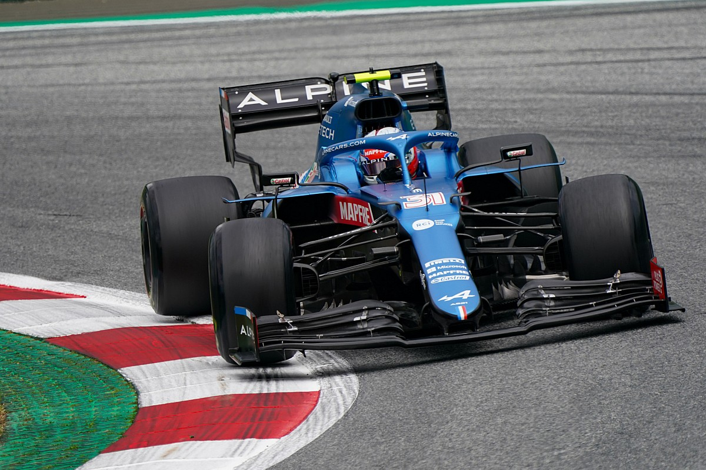

Esteban José Jean-Pierre Ocon-Khelfane, meglio conosciuto come Esteban Ocon (Évreux, 17 settembre 1996) è un pilota automobilistico francese, attivo in Formula 1 con la Alpine. Vincitore del campionato GP3 nel 2015, è stato attivo in Formula 1 dal 2016 al 2018 con Manor e Force India e dal 2020 è alla guida della Renault. Nel Gran Premio del Belgio 2016 è diventato, a 19 anni e 345 giorni, il più giovane francese a partecipare ad una gara di Formula 1; poi quando nel 2017 è stato assunto dalla Force India è diventato il più giovane francese a concludere una gara a punti nella massima categoria, Gran Premio d'Australia 2017. Detiene il particolare record di aver completato le prime 27 gare di Formula 1 a cui ha partecipato (dal Gran Premio del Belgio 2016 al Gran Premio del Messico 2017). È di origini spagnole da parte di padre e franco-algerine da parte di madre. Il suo numero di gara è il 31. Ocon ebbe il primo contatto con la Formula 1 il 21 novembre 2014, quando prese parte alla prima sessione di prove libere del Gran Premio di Abu Dhabi guidando per la Lotus. La collaborazione con la scuderia inglese, tuttavia, non andò a buon fine. Prima del suo esordio in GP3 nel 2015, la Mercedes annunciò di aver inserito Ocon nel proprio programma per giovani piloti, assegnandogli anche la posizione di pilota di riserva per il DTM. A maggio Ocon prese parte ai test per giovani piloti organizzata sul circuito di Barcellona, sostituendo l'indisposto Pascal Wehrlein al volante della Force India. La Mercedes rinnovò l'appoggio ad Ocon anche per la stagione 2016. A febbraio 2016, la Renault lo ufficializzò come terzo pilota per la stagione, con un accordo di prestito con la scuderia tedesca. Durante l'anno provò la Renault RS16 nelle prime prove libere dei Gran Premi di Spagna, Gran Bretagna, Germania e Ungheria e durante i test seguenti al Gran Premio stesso. Il 10 agosto 2016 fu annunciato il suo ingaggio come pilota ufficiale con la Manor già a partire dal Gran Premio del Belgio. Il pilota francese sostituì Rio Haryanto, escluso dalla scuderia dati gli scarsi risultati e a causa del mancato appoggio dei suoi sponsor. Ocon giunse al traguardo in tutte le gare a cui prese parte. Nel penultimo Gran Premio della stagione, in Brasile, Ocon sfruttò lo svolgimento caotico della corsa, interrotta a più riprese per la pioggia, per risalire fino all'ottava posizione; decimo a due tornate dal termine, il pilota francese fu superato da Fernando Alonso e Valtteri Bottas, chiudendo dodicesimo e fuori dai punti. Questo piazzamento rimase, comunque, il suo miglior risultato stagionale.  Ocon fu confermato dalla Force India anche per il 2018, insieme a Sergio Pérez. L'inizio della stagione non fu facile né per Ocon, né per la squadra: il pilota francese tagliò il traguardo fuori dai punti nell'inaugurale Gran Premio d'Australia, rimanendo nelle retrovie sia in qualifica che in gara. Il Gran Premio del Bahrein vide una parziale ripresa, con Ocon che conquistò il decimo posto dopo essere partito ottavo. In Cina il pilota francese concluse nuovamente fuori dalla zona punti, mentre in Azerbaigian Ocon, qualificatosi settimo, fu coinvolto in un incidente con Kimi Räikkönen nelle fasi iniziali di gara, che lo costrinse al ritiro. Nel Gran Premio di Spagna Ocon si ritirò per un problema meccanico per la prima volta in carriera. Questa doppia battuta d'arresto fu seguita da due risultati utili consecutivi, frutto di un sesto posto nel Gran Premio di Monaco e di un nono nel Gran Premio del Canada. Nella gara di casa, invece, Ocon dovette nuovamente ritirarsi, in questa occasione per una collisione nel primo giro con i connazionali Romain Grosjean e Pierre Gasly. Nelle successive tre gare riuscì ad andare a punti con il sesto posto in Austria, il settimo in Gran Bretagna e l'ottavo in Germania. Al successivo Gran Premio d'Ungheria, dopo aver ottenuto il diciottesimo posto in qualifica, non riuscì ad andare oltre il tredicesimo posto in gara. Nel Gran Premio del Belgio ottenne un inaspettato terzo posto in una qualifica condizionata dalla pioggia e concluse la gara in sesta posizione. Ottenne lo stesso risultato nel successivo Gran Premio d'Italia, mentre nel Gran Premio di Singapore fu costretto al ritiro appena dopo la partenza, a causa di un contatto col compagno di squadra Sergio Pérez, in seguito al quale si schiantò sulle protezioni che delimitano il tracciato. Ocon chiuse la stagione al 12º posto in classifica con 49 punti. Il 23 novembre 2018 fu annunciato il suo ingaggio come terzo pilota e riserva della Mercedes per la stagione 2019, oltre che della Racing Point. Durante la pausa estiva del campionato di Formula 1 2019, secondo alcune voci, la Mercedes valutò se mantenere Valtteri Bottas per la stagione 2020 o rimpiazzarlo con Ocon. Il 29 agosto 2019 la Mercedes annunciò la conferma di Bottas e nello stesso giorno Ocon firmò un contratto biennale con la Renault a partire dalla stagione successiva, in sostituzione di Nicolas Hülkenberg. Confermato dalla scuderia francese (ribattezzata Alpine), per il 2021 Ocon fu affiancato dal rientrante due volte campione del mondo Fernando Alonso. Dopo una difficile gara in Bahrein, condizionata da una bandiera gialla durante le qualifiche e da un tamponamento subito da Sebastian Vettel, Ocon iniziò una serie di piazzamenti a punti, con un settimo posto nel Gran Premio del Portogallo come miglior risultato. Il 16 giugno venne annunciato il rinnovo di Ocon fino al 2024 con il suo team, Alpine. Nelle tre gare successive Ocon non fece segnare punti: chiuse infatti in quattordicesima posizione sia il Gran Premio di Francia che il Gran Premio di Stiria, ritirandosi in Austria. Tornò a punti nel Gran Premio di Gran Bretagna, giungendo nono. Nel Gran Premio d'Ungheria del 1º agosto 2021 conquistò la sua prima vittoria in Formula 1, arrivando davanti a Lewis Hamilton e Carlos Sainz Jr. dopo la squalifica ai danni di Sebastian Vettel, originariamente giunto secondo. Nelle cinque gare seguenti ottenne altri quattro piazzamenti a punti, consolidando la sua 11ª posizione in classifica piloti. Nel Gran Premio del Qatar conquistò un prestigioso quinto posto. In seguito, nel Gran Premio dell'Arabia Saudita, dopo essersi portato in terza posizione grazie ad una bandiera rossa, nell'ultimo giro venne superato da Valtteri Bottas, concludendo così 4º.